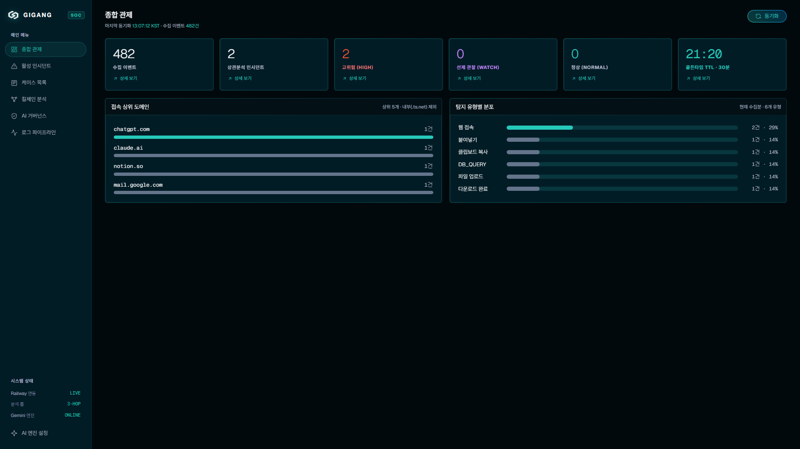
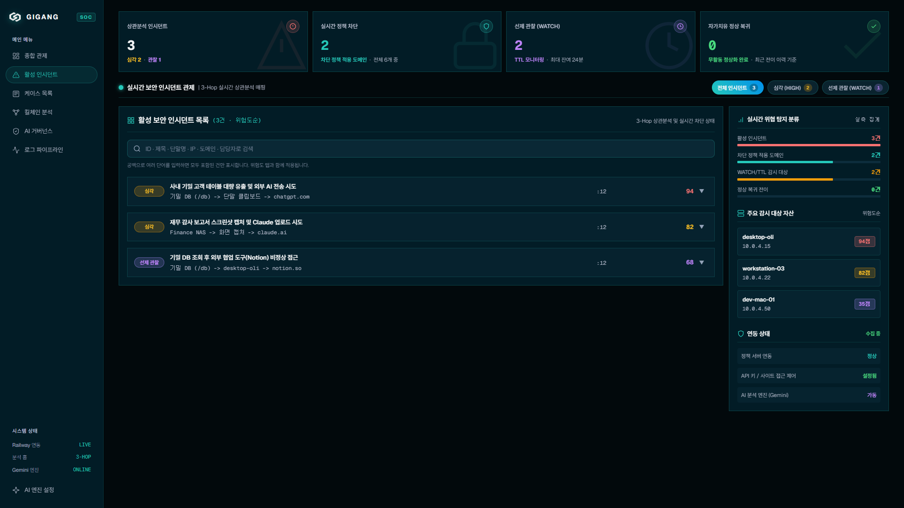
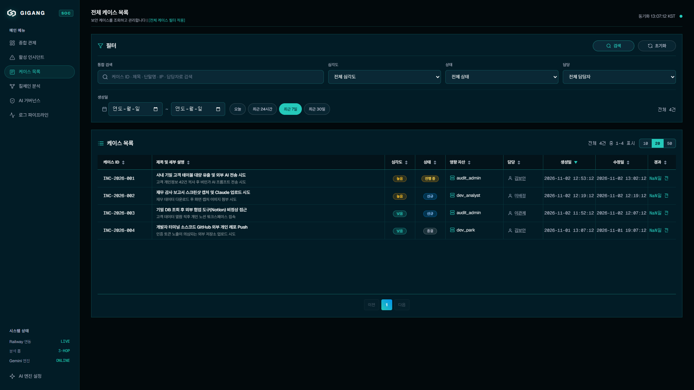
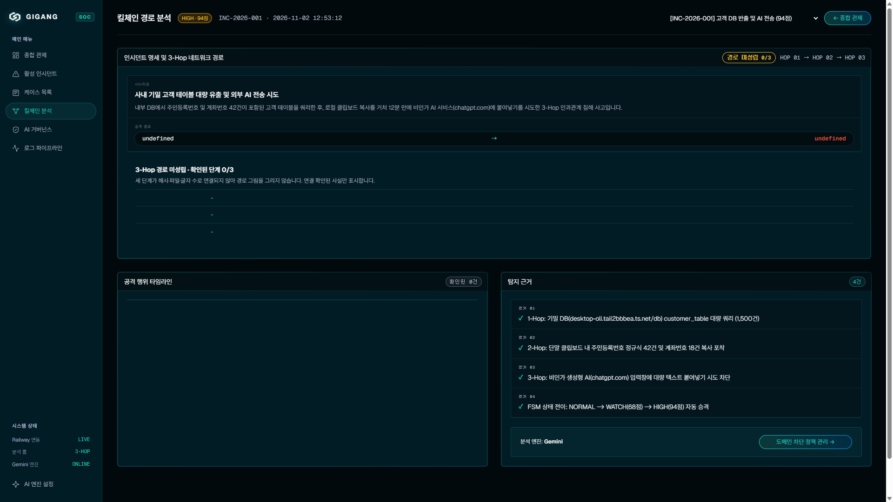
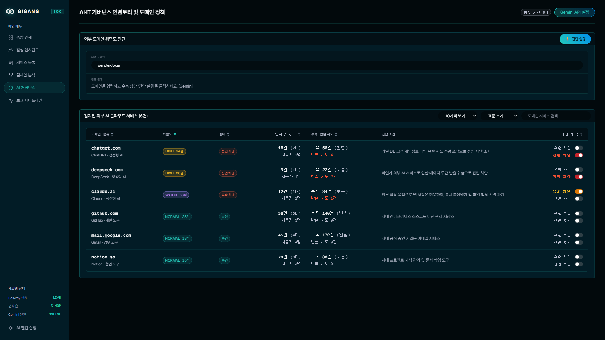
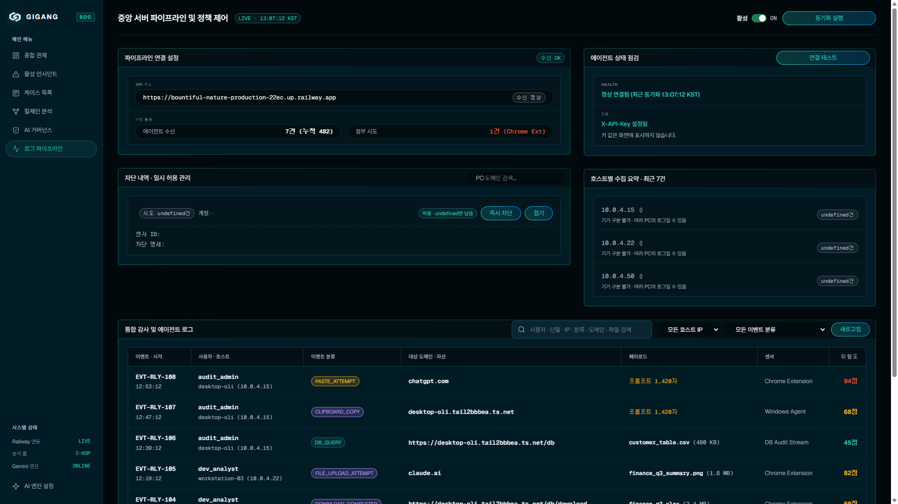

단순 단일 이벤트 기반의 사후 통보를 탈피하고, 기밀 DB 조회부터 단말 내 복사/OCR, 그리고 외부 AI/SaaS 전송까지의 3-Hop 인과관계를 FSM 상태 머신으로 추적하여 선별적으로 즉시 차단합니다.
기밀 DB를 조회했더라도 30분 동안 추가적인 외부 유출 행위가 없으면, 상태 머신이 자동으로 NORMAL로 복귀합니다. 보안 담당자가 일일이 수동 확인하거나 오탐 티켓을 닫을 필요가 없어 관제 피로도를 획기적으로 낮춥니다.
도메인 접속 자체를 원천 차단. Windows hosts에 0.0.0.0 매핑 및 브라우저 webNavigation 이벤트 가로채기(blocked.html). 고위험 미승인 AI 사이트 원천 봉쇄.
정상 업무를 위한 웹 서핑은 허용하되, 클립보드 붙여넣기 및 파일 첨부/드롭만 선별 차단. transfer_guard.js가 캡처 단계에서 이벤트 전파를 사전 중단.

실시간 수집 이벤트(482건), 상관분석 인시던트(2건), 30분 골든타임 TTL 카운트다운 타이머, 7일간의 주간 보안 이벤트 발생 추이 및 상위 이상 접속 도메인 통계를 단일 뷰에서 제공합니다.

기밀 DB -> 단말 클립보드 -> chatgpt.com 전송 시도에 이르는 실시간 상관분석 매핑 결과와 우선순위 인시던트 큐, 담당자 배정 상태, AI 종합 브리핑 요약문을 지원합니다.

모든 인시던트를 티켓화하여 신규, 진행 중, 조치 완료로 추적 관리합니다. 심각도, 기간, 키워드, ML 탐지 여부 필터링 및 단말기 명칭(PC Name) 매핑 조회가 가능합니다.

DB 쿼리부터 단말 복사, 웹 전송까지 단계별 위험도 전파 그래프를 시각화합니다. MITRE ATT&CK(T1530, T1115, T1048.003) 자동 연계 및 1-Click 격리 대응 플레이북을 제공합니다.

사내에서 감지된 생성형 AI 및 클라우드 자산 인벤토리입니다. [전면 차단]과 [유출 차단] 2단계 제어 스위치가 상호 배타적으로 동작하며, Gemini AI의 위험도 자동 진단 소견이 제공됩니다.

DB Audit, Windows Agent, Chrome Extension에서 수집되는 실시간 로그 스트림입니다. 발생 시각, 사용자, 단말 IP, 이벤트 종류, 파일 크기, 위험도 점수를 실시간 모니터링합니다.